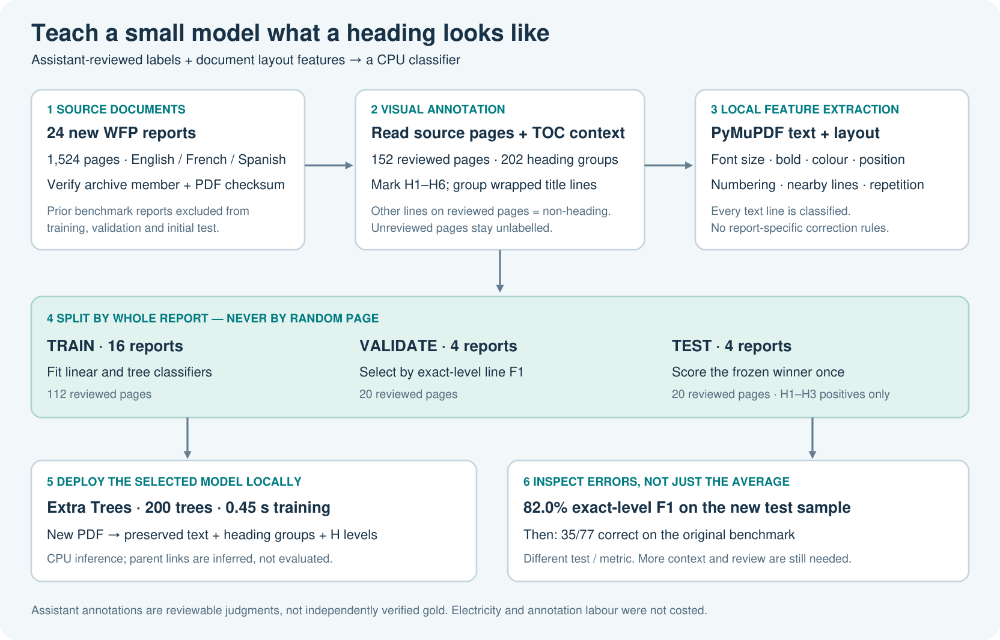
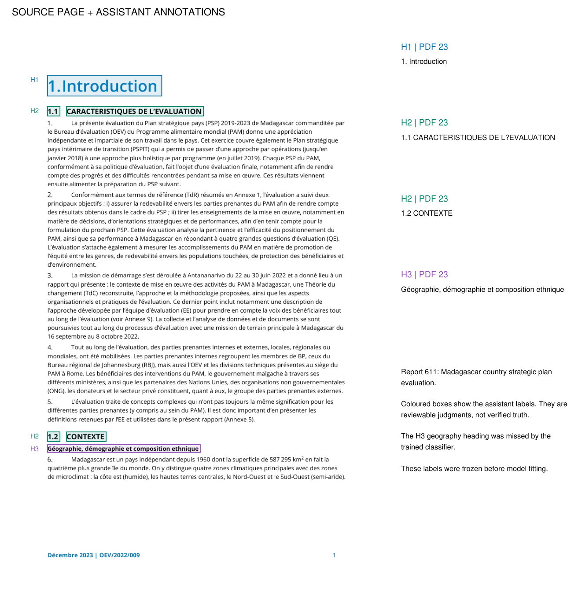

Current comparison metric: the league now ranks by joint heading-and-level F0.5 with a ≥95% heading-detection precision requirement. Definitions and worked example · New precision experiment. The F1 results and selection criteria below describe the original frozen experiment; they have not been retroactively changed. Published primary scores use the league's same-page title matching rule.
Yes, as a promising pilot—not yet a robust general document parser. A small CPU tree classifier learned from assistant-labelled WFP reports and reached 82.0% exact-level F1 on sampled pages of four unseen reports. It correctly labelled every line of 22 of 27 test headings. This experiment evaluates supervised heading classification, not fine-tuning a language model.
The goal is to preserve extracted text while identifying heading levels cheaply. Headings tell retrieval systems what a passage belongs to: an acronyms list and an executive summary can contain similar words but serve very different user needs. A wrong heading or parent can attach useful text to the wrong section.
The supplied Evaluation list - Phase 1.xlsx, sheet Evaluation list, contains 335 catalogue entries. We matched 333 original PDFs in the supplied WFP archive snapshot 20261121T043910Z. We selected 24 reports dated 2017–2026: 17 English, four French and three Spanish; 1,524 PDF pages altogether. Selection is a deliberately varied convenience sample, not a random estimate of all WFP reports.
Sources, catalogue row numbers, exact archive member names and SHA-256 checksums are recorded in the corpus manifest. Archive extraction uses exact members and verifies size and checksum. No network download script was added: the supplied local archive is the reproducible source. Public PDF links are supplied in the table for access outside that archive; their future bytes may change.
Prior benchmark reports—Colombia, Indonesia, the mid-term strategic plan, targeting, and the original 2018 resilience report—are excluded by catalogue identity, WFP document identifier and checksum where available. An additional resilience entry was conservatively excluded. A GAFSP report was removed during source review because it was not a WFP evaluation, and replaced before fitting. See the exclusion manifest.
| Split | Reports | All PDF pages | Reviewed pages | Reviewed text lines | Positive heading lines |
|---|---|---|---|---|---|
| Training | 16 | 934 | 112 | 6,052 | 203 |
| Validation | 4 | 313 | 20 | 1,028 | 31 |
| Test | 4 | 277 | 20 | 834 | 33 |
Splits are by entire report. No page from a validation or test report is used for fitting. Shared WFP templates, countries and report families can still occur across splits; this is not a template-disjoint experiment.
The assistant inspected rendered page images, extracted text, contents pages and surrounding sections, assigning body/non-heading (0) or H1–H6. There are 202 heading groups: 154 training, 21 validation and 27 test. Wrapped titles have explicit constituent line IDs. These are assistant annotations with documented decisions, not independently adjudicated human gold or established 100% accuracy.
Initially five pages per report were reviewed: contents when detected (otherwise page 2), approximate body start, one-third, two-thirds and end. The catalogue's machine-generated heading columns were not used as labels. The El Salvador body start was corrected from the catalogue using the PDF. After initial validation, two additional pages per training report were selected using numbered/bold-line counts and visually reviewed. Validation and test pages stayed fixed. Exact 1-based PDF pages appear below; they differ from printed page numbers.
Only reviewed pages contribute examples. Every other extracted line on a reviewed page is a negative. Unreviewed pages are unlabelled, never automatically treated as negatives. Contents entries, table captions, boxed findings, running headers and inline bold paragraph lead-ins are excluded. A standalone contents-section title is a heading. These policy choices matter; other applications may want different labels.
The labels and readable annotations with bounding boxes are committed for review. No model predictions were used as ground truth. Training labels were clarified during expansion; test labels were fixed before fitting and no test scores were examined until final selection.
| Stage / model | Method | Code |
|---|---|---|
| Local archive preparation | Extract the selected regular-file members; verify SHA-256 and reject prior-document overlap | prepare.py, data validation |
| Text and features | PyMuPDF text lines; relative font size, bold/italic, colour, position, repetition, numbering and neighbouring lines | feature extractor |
| Logistic regression | Standardized features; balanced class weights; C=1; seed 42 | model implementation |
| Extra Trees | 200 trees; depth 16; minimum leaf 2; 80% features; balanced class weights; seed 42; four CPU workers | model implementation |
| Selection | Fit only training reports; choose highest validation exact-level F1 | train.py |
| Final test | Evaluate only the selected model; refuse changed labels/corpus/model or an existing test result | evaluate_test.py |
| Deployment | Data-only JSON classifier, preserved text and predicted heading groups; inferred parents flagged as unevaluated | predict.py, inference |
| Timing | Run extraction and classification over every page of all 24 PDFs | benchmark.py |
This baseline learns the classification decisions. It still uses engineered layout/text features, including general numbering and caption patterns; it is not a rule-free neural model. There are no per-report correction rules, report IDs as features or hard heading-candidate filters. Full-document font/repetition statistics are calculated without labels, including at inference. Docling is not required for this baseline.
| Model | Scored set | Detection precision | Recall | Detection F1 | Exact-level F1 | Whole headings correct | Fit time |
|---|---|---|---|---|---|---|---|
| Logistic regression | Validation | 52.8% | 90.3% | 66.7% | 47.6% | 15/21 | 0.253s |
| Extra Trees, 200 trees | Validation | 95.8% | 74.2% | 83.6% | 69.1% | 15/21 | 0.455s |
| Extra Trees, selected | Held-out test | 100.0% | 84.8% | 91.8% | 82.0% | 22/27 | 0.455s |
Test evaluation was performed once. The linear model was not scored on test.
Actual full-document inference covered 1,524 pages in 21.88 seconds on an Apple M4 Pro Mac mini (14 CPU cores, 48 GB RAM), CPU only. This sums extraction, feature calculation, classification and heading grouping, excluding interpreter/model loading and output-file writes. That is 7.18 seconds per 500 pages, a throughput normalization, not a separately timed run. Peak process RSS was 557.5 MiB. The selected JSON model is 9.97 MiB.
Cost: no metered API inference spend and no GPU. Electricity, hardware amortization and annotation labour were not measured, so total cost is not reported as zero. Assistant annotation was used to create the dataset; the preparation, training and deployed classifier run locally.
Detection F1 treats any positive level as a detected heading. Exact-level F1 counts a heading line as correct only at the annotated level; wrong-level predictions reduce both precision and recall. True-negative body lines do not inflate either score. Whole-headings-correct requires every constituent line to have the right level, but does not measure whether predicted groups have perfect boundaries. Scores are micro-averaged over reviewed lines, not full documents.
The initial 120-page tree run scored 70.4% validation exact-level F1. With 32 extra training pages this was 69.1%, while complete correctly levelled validation headings increased from 14/21 to 15/21. More examples did not automatically improve the line metric. The expanded tree model was selected against the expanded linear baseline (47.6%). An intermediate export failed its sklearn probability-parity check and was corrected to match sklearn's float32 tree traversal; no test was scored during that failure. Frozen run history and predictions are in evidence.
| Held-out report | Reviewed pages | Positive heading lines | Exact-level F1 |
|---|---|---|---|
| Madagascar country strategic plan (611) | 5 | 12 | 63.2% |
| El Salvador country strategic plan (585) | 5 | 8 | 75.0% |
| Guatemala school programmes impact (815) | 5 | 8 | 100.0% |
| UN humanitarian coordination synthesis (1037) | 5 | 5 | 100.0% |
All five incorrectly or incompletely levelled heading groups occurred in the French and Spanish country-plan reports. In Madagascar, a geography subsection was missed; one long question was partly missed and partly promoted from H3 to H2; another wrapped question was missed entirely. In El Salvador, two H3 questions were wholly or partly demoted to H4. These small samples cannot isolate a language effect from report style. Perfect scores on the other ten sampled pages do not imply perfect parsing of those reports.
The next justified experiment is to expand independently reviewed H4–H6 examples and different template families, then compare this baseline with a small model that learns from text, layout and surrounding blocks. Keep a new untouched test set for that round. More assistant-labelled data is feasible; the present evidence supports proceeding, not a claim that it already works on any document.


The visual review pack displays collated TOCs, all 152 reviewed pages, frozen H-level boxes and optional classifier predictions. You can confirm or propose changes and export a separate review JSON. None of those actions alters the scored labels.
The frozen model was subsequently tested on the original four benchmark PDFs, all excluded from training. Under the original title-matching and exact-level scoring contract, it recovered 59/77 titles (76.6%), with 35/77 correct levels (45.5%) and 20 extra headings. Full-document inference took 7.7 seconds over 523 pages. This result appears in the main comparison table, with frozen evidence. It gives a direct comparison to the other methods; the new test set's 82.0% line F1 remains a separate result.
Use Python 3.12 and the committed uv.lock. This run used scikit-learn 1.9.1. PDFs, extracted full text and fitted models remain outside Git. Source PDF and package licences are separate from the repository licence.
uv sync --locked --extra training
# Set these to your existing local archive and an external output directory.
ARCHIVE=/path/to/wfp-20261121T043910Z.tar
DATA=/path/to/external/supervised-v1
uv run python scripts/supervised/prepare.py --archive "$ARCHIVE" --data "$DATA"
# Optional: generate page images and line IDs for reviewing or expanding annotations.
uv run python scripts/supervised/review.py --data "$DATA" --output "$DATA/review-pack"
uv run --extra training python scripts/supervised/train.py --data "$DATA" --output "$DATA/my-run"
# Inspect validation first; this is the final held-out test, not a tuning loop.
uv run python scripts/supervised/evaluate_test.py --data "$DATA" --run "$DATA/my-run"
uv run python scripts/supervised/benchmark.py --data "$DATA" --run "$DATA/my-run"
uv run python scripts/supervised/predict.py --pdf /path/to/new-report.pdf \
--model "$DATA/my-run/trees.json" --output "$DATA/new-report-output"
uv run python scripts/supervised/report.py
Use the selected model named in my-run/selection.json; trees.json is the winner in this recorded run. New reports need an embedded text layer and the same feature schema. The report generator regenerates the committed frozen evidence, not a new experiment's results. Changing the corpus or labels requires preparing features again and a fresh run directory. Do not repeatedly use the published test for model selection.